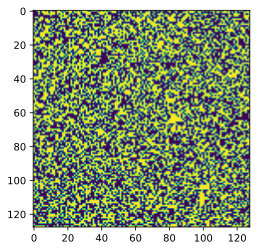
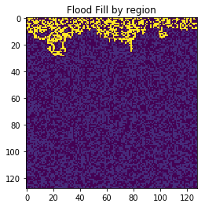
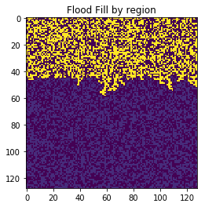
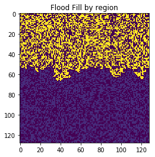
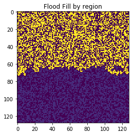

Flood Fill is a way to to visit every point in a bounded region. This makes it useful for many purposes. In this notebook I implement the "bucket fill" flood fill algo.
First up generating a grid to flood fill:
import numpy as np
import matplotlib.pyplot as plt
fill = np.random.randint(0, 2, size=(128,128), dtype="int")
fill
array([[0, 0, 1, ..., 0, 1, 0],
[0, 0, 0, ..., 1, 1, 1],
[0, 0, 0, ..., 0, 0, 1],
...,
[0, 0, 0, ..., 1, 0, 1],
[1, 0, 0, ..., 1, 1, 0],
[0, 1, 1, ..., 1, 0, 0]])
plt.imshow(fill);

The below function is a recursive implementation of flood fill - it will flood fill a a single region from 1 val to another:
def flood_fill(x, y, old, new):
"""takes in a x,y position from where to flood fill, the old val to change from and the new val
to change too, and then does so on a to_fill array"""
if fill[x][y] != old or fill[x][y] == new:
return
fill[x][y] = new
max_x = len(fill) - 1
max_y = len(fill) - 1
if x > 0: # go left
flood_fill(x-1, y, old, new)
if x < max_x: # go right
flood_fill(x+1, y, old, new)
if y > 0: # go down
flood_fill(x, y-1, old, new)
if y < max_y: # go up
flood_fill(x, y+1, old, new)
Here, I flood fill the fill, converting all the 1's to 8's.
region_count = 0
imagelist = list()
imagelist.append(fill)
for i in range(len(fill)):
for j in range(len(fill[0])):
if fill[i][j] == 1:
flood_fill(i, j, 1, 8)
region_count += 1
imagelist.append(fill)
if region_count % 100 == 0:
plt.imshow(imagelist[region_count])
plt.title("Flood Fill by region")
plt.show()





